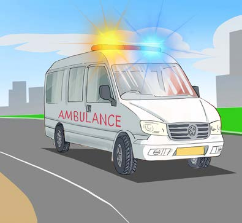

Materials like metal, water, and air can transmit sound. This shows that certain solids, liquids and air can carry sound waves.
Read online articles or watch videos, then briefly explain which medium air, water or solids transmits sound the fastest.
Uses of sound energy
Sound energy enables communication in homes, schools and on the road. Devices like phones and tablets produce sound for communication. Phones, tablets, radios, televisions and computers also use sound for information sharing. They provide news, entertainment and various information through sound videos or pictures.
Sound is also used in medical treatment. For example, various medical devices use sound energy for effective diagnosis as well as surgeries. Refer Figure 17(a).
An ambulance has a siren which uses sound energy to signal medical emergency as in Figure 17(b).
